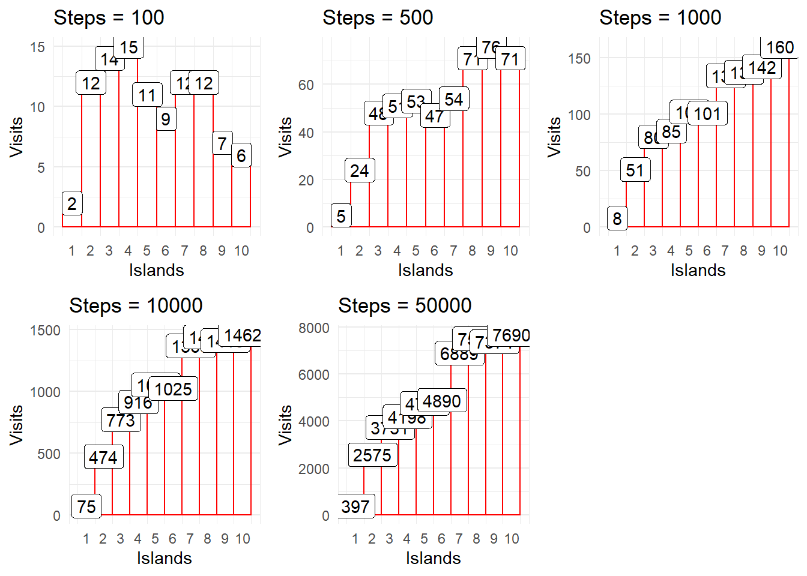

Code
library(tidyverse)Doing the basic Markov Chain Monte Carlo, recreating from: https://www.youtube.com/watch?v=rZk2FqX2XnY&t=2936s
library(tidyverse)This is the function that creates the “rules” and probabilities
set.seed(123)
islands <- sort(runif(10, 1, 5000))
countz <- c()
current <- 10
for(it in 1:50000) {
island1 <- current - 1
if (current == 1) {
island1 <- 10
} else {
island1 <- current - 1
}
if (current == 10) {
island2 <- 1
} else {
island2 <- current + 1
}
# 1= left, 2 = right
flip <- rbinom(1,1, 0.5) + 1
num <- islands[get(paste0("island", flip))]
den <- islands[current]
prob <- num/den
if(prob > 1) {
prob <- 1
}
#0 = stays
#1 = moves
out <- rbinom(1,1, prob)
if (out == 0) {
current <- current
} else {
current <- get(paste0("island", flip))
}
countz <- c(countz, current )
}
kableExtra::kable( data.frame("Island" = 1:length(islands), "Population" = islands))| Island | Population |
|---|---|
| 1 | 228.7369 |
| 2 | 1438.6000 |
| 3 | 2045.4756 |
| 4 | 2283.6171 |
| 5 | 2640.9993 |
| 6 | 2757.6236 |
| 7 | 3941.7374 |
| 8 | 4415.2040 |
| 9 | 4462.2028 |
| 10 | 4702.3960 |
plot_dat <- countz |>
as.data.frame() |>
mutate(seq = factor(row_number()))
plot1 <- plot_dat |>
ggplot(aes(x = countz)) +
geom_histogram(binwidth = 1, color = "red", fill = NA) +
scale_x_continuous(breaks = 1:10) +
labs(x = "Islands",
y = "Visits") +
theme_minimal() +
theme(panel.grid.major.x = element_blank())
plot1limitz_c <- accumulate(c(50000, 1:6), ~ .x/2)
#Same as
# 50000 /2
#
# (50000 /2 )/2
#
# ((50000 /2 )/2)/2
#
# (((50000 /2 )/2)/2)/2
#
# ((((50000 /2 )/2)/2)/2)/2
limitz <- 10000
labelz <- plot_dat$countz[1:limitz] |>
table() |>
as.data.frame() |>
mutate(Var1 = as.numeric(Var1))
plot1 %+%
subset(plot_dat, seq %in% 1:limitz) +
labs(title = paste0("Steps = ", limitz)) +
geom_label(data = labelz , aes(label = Freq, y = as.double(Freq), x = Var1))limitz <- 5
get_subplot <- function(limitz) {
labelz <- plot_dat$countz[1:limitz] |>
table() |>
as.data.frame() |>
mutate(Var1 = as.numeric(as.character(Var1)))
plot_i <- plot1 %+%
subset(plot_dat, seq %in% 1:limitz) +
labs(title = paste0("Steps = ", limitz)) +
geom_label(data = labelz , aes(label = Freq, y = as.double(Freq), x = Var1))
return(plot_i)
}require(gridExtra)
p1 <- get_subplot(100)
p2 <- get_subplot(500)
p3 <- get_subplot(1000)
p4 <- get_subplot(10000)
p5 <- get_subplot(50000)
grid.arrange(p1, p2, p3, p4, p5, nrow=2)
This is just to get the underlying data from each plot made with the above function
comp_ls <- lapply(c(15, 20), function(x) {
get_subplot(x) |>
with(data) |>
mutate(limit_group = x)
})
comp <- bind_rows(comp_ls)This is just shows each step, up until the 1000 step
plot_dat |>
head(1000) |>
mutate(gr = "gr",
seq = as.numeric(seq)) |>
ggplot(aes(x = seq, y = countz, group = gr)) +
geom_point() +
geom_line() +
scale_y_continuous(breaks = 1:100) +
scale_x_continuous(n.breaks = 10) +
labs(x = "Step", y = "Island") +
theme_minimal()
This is just shows the accumualtion of visits over time
countz2 <- factor(countz, levels = 1:10)
rev <- sapply(1:length(countz2), function(x) table(countz2[1:x]))
m <- t(rev)
df <- as.data.frame(m[1:1000, 1:10]) |>
rename_with( ~ paste0("island_", .x)) |>
mutate(step = row_number()) |>
pivot_longer(cols = starts_with("island"),
names_to = "island",
values_to = "visits")
color_fx <- colorRampPalette(c("#faae7b", "#432371"))
color1 <- color_fx(10)
names(color1) <- unique(df$island)
df |>
mutate(island2 = factor(island),
island3 = as.numeric(gsub("island_", "", island))) |>
ggplot(aes(x = step, y = visits, group = island2, color = island2)) +
geom_point() +
scale_color_manual(values = color1,
aesthetics = "color") +
theme_minimal()# Same but with different color spectrum set-up
# df |>
# mutate(island2 = factor(island),
# island3 = as.numeric(gsub("island_", "", island))) |>
# ggplot(aes(x = step, y = visits, group = island3, color = island3)) +
# geom_point() +
# scale_color_steps( high = "#432371", low = "#faae7b") +
# theme_minimal()Taken from: https://rpruim.github.io/Kruschke-Notes/markov-chain-monte-carlo-mcmc.html
KingMarkov <- function(
num_steps = 1e5,
population = 1:5,
island_names = 1:length(population),
start = 1,
J = function(a, b) {1 / (length(population) - 1)}
) {
num_islands <- length(population)
island_seq <- rep(NA, num_steps) # trick to pre-alocate memory
proposal_seq <- rep(NA, num_steps) # trick to pre-alocate memory
current <- start
proposal <- NA
for (i in 1:num_steps) {
# record current island
island_seq[i] <- current
proposal_seq[i] <- proposal
# propose one of the other islands
other_islands <- setdiff(1:num_islands, current)
proposal <-
sample(other_islands, 1,
prob = purrr::map(other_islands, ~ J(current, .x)))
# move?
prob_move <- population[proposal] / population[current]
# new current island (either current current or proposal)
current <- ifelse(runif(1) < prob_move, proposal, current)
}
tibble(
step = 1:num_steps,
island = island_names[island_seq],
proposal = island_names[proposal_seq]
)
}